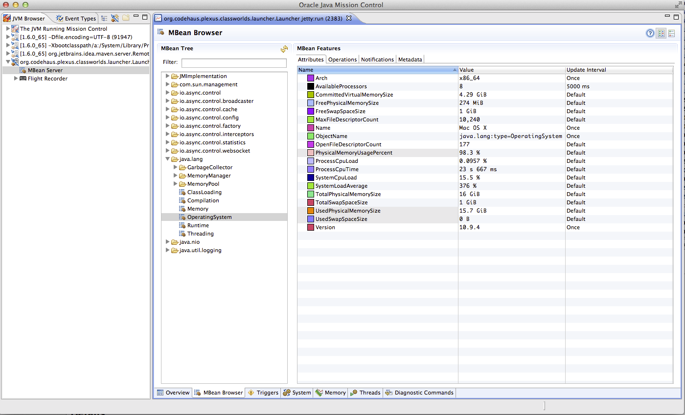
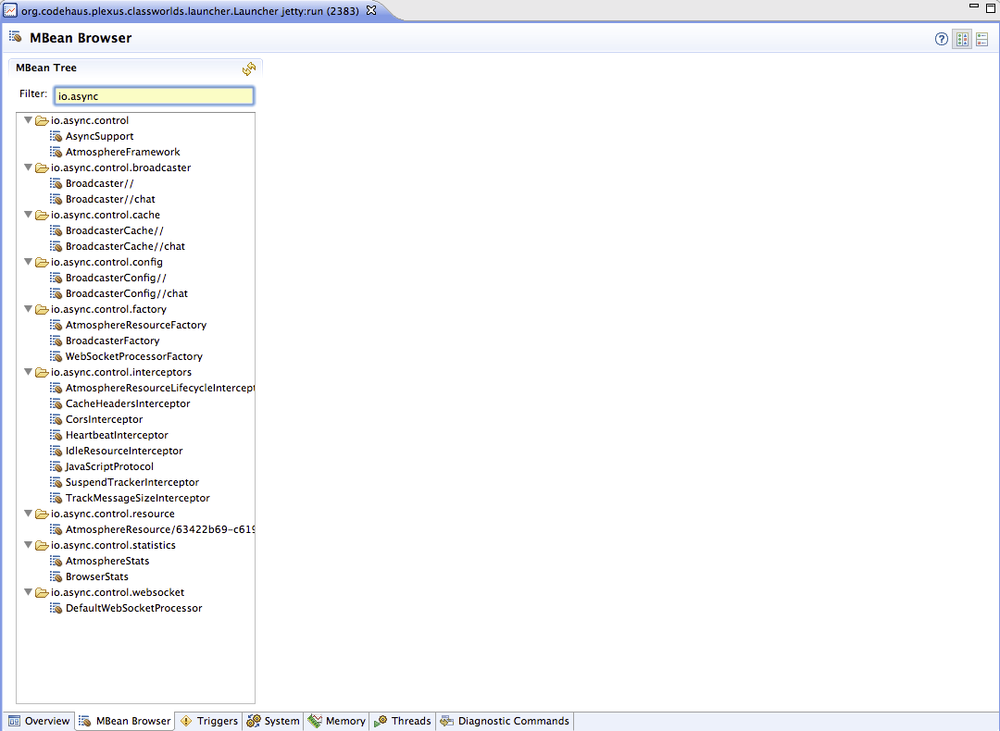
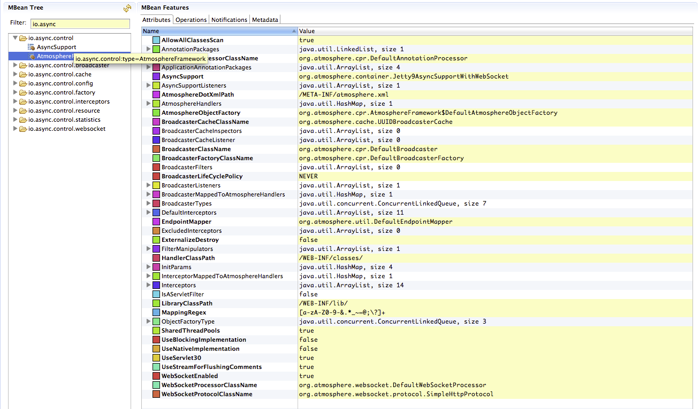
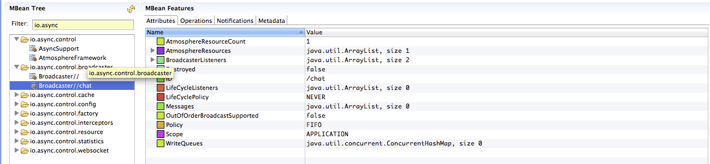
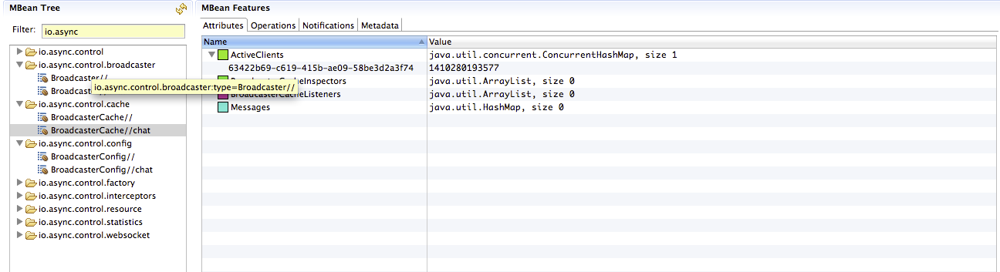
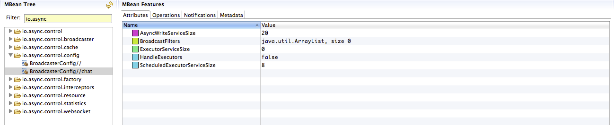
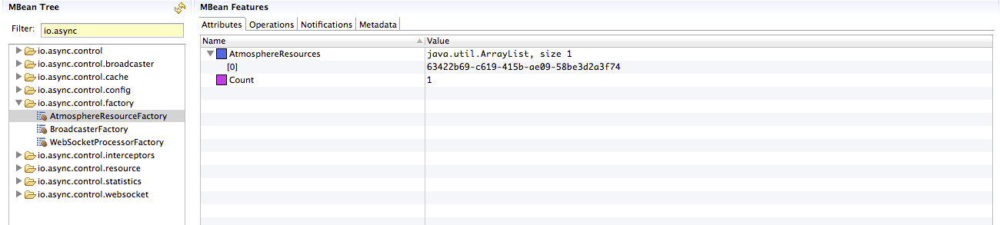
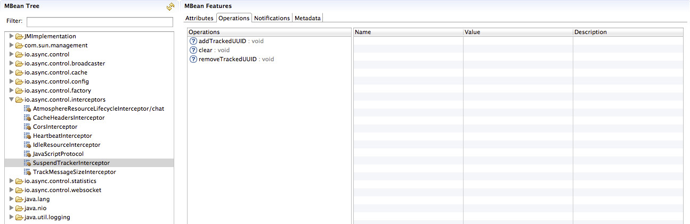
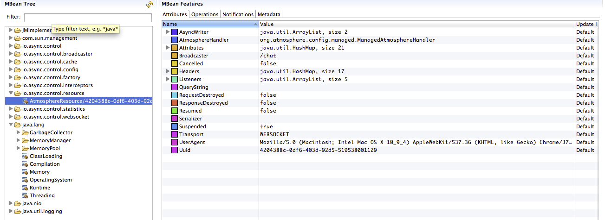
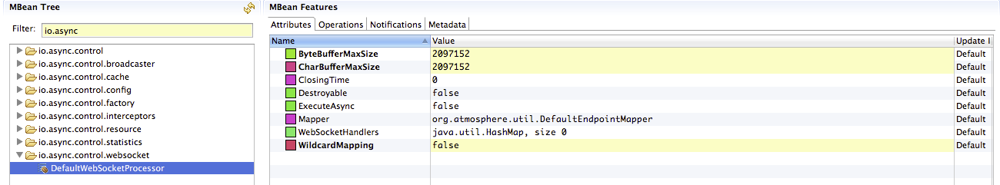

Atmosphere Tower Control is designed with ease of use and flexibility in mind and delivers unprecedented power to Atmosphere’s Developers. Atmosphere Tower Control is a complete ecosystem for developers, offering a complete end to end solution for monitoring an debugging an Atmosphere application.
{kind=link}
Tower Control offers the ability to completely configure Atmosphere, collect statistics, reload Atmosphere applications and hot swap an Atmosphere applications remotely.
Installing Tower Control
Installing Tower Control is simple. All you need to do is to add the artefact:
<dependency> <groupId>io.async</groupId> <artifactId>atmosphere-tower-control</artifactId> <version>1.0.0</version> </dependency>
Atmosphere will auto-detect the jar and will install Tower Control automatically. Once installed, you should see in your log:
11:56:17.411 INFO [main] o.a.c.AnnotationHandler [AnnotationHandler.java:63] Found Annotation in class io.async.control.TowerControlInterceptor being scanned: interface org.atmosphere.config.service.AtmosphereInterceptorService
11:56:17.537 INFO [main] i.a.c.TowerControlInterceptor [TowerControlInterceptor.java:58]
Atmosphere Tower Control
11:56:17.538 INFO [main] o.a.c.AnnotationHandler [AnnotationHandler.java:63] Found Annotation in class io.async.control.TowerConttrolListener being scanned: interface org.atmosphere.config.service.BroadcasterListenerService
Starting Tower Control
To start Tower Control, all you need to have is a tool supporting JMX. For example, both Java Mission Control(JMC) and jVisualVM supports JMX. Let’s assume we will use JMC. To start JMC, just do:
% jmc
{kind=link}
Next, select under the JVM Browser Tab, select the Java process, which started your Atmosphere Application. On the right side, select the MBean Tab. You should see
{kind=link}
To make things simpler, type io.async in the Filter field, so we just see Tower Control Beans
{kind=link}
All the Atmosphere’s MBeans are grouped by type:
- io.async.control: Contains information about installed AsyncSupport and AtmosphereFramework classes.
- io.async.control.broadcaster: The current set of created Broadcaster with their associated state.
- io.async.control.cache: The current set of created BroadcasterCache with their associated state.
- io.async.control.factory: The BroadcasterFactory, AtmosphereResourceFactory and WebSocketProcessorFactory with their associated state.
- io.async.control.interceptors: The current set of installed AtmosphereInterceptor with their associated state.
- io.async.control.resource: The current set of connected clients, represented by their AtmosphereResource.
- io.async.statistics: Live statistic like number of connections, messages, transport used as well as Browser’s used.
- io.async.control.websocket: Contains information about installed WebSocketProcessor
Let’s explore them one by one and see what kind of information is available from those beans.
io.async.control.AsyncSupport
Attributes
Contains information about the server used and if websocket is supported or not.
Operations
No operation available

io.async.control.AtmosphereFramework
Attributes
Contains information about how Atmosphere has been started and configured. Everything configured by default or via web/application.xml is getting reflected.
Operations
You can reconfigure the AtmosphereFramework via the MBean’s operations. For example, you can add BroadcasterListener, init-params etc. and then click on reload to reconfigure the AtmosphereFramework.
{kind=link}
io.async.control.broadcaster
Attributes
Contains information about the current state of a Broadcaster. For example, the AtmosphereResource, the number of them, the installed BroadcasterListener, etc.
Operations
Several operations are available, like adding, on the fly, AtmosphereResource, broadcasting messages, resuming AtmosphereResources etc.
{kind=link}
io.async.control.cache
Attributes
Contains information about the current state of the BroadcasterCache like active AtmosphereResource, installed listeners etc.
Operations
Message can be added, excluded or deleted from the cache
{kind=link}
io.async.control.config
Attributes
Contains information about the BroadcasterConfig likes Thread, Thread Pool, etc.
Operations
You can destroy or remove BroadcastFilter
{kind=link}
io.async.control.factory
Attributes
Contains information about the number of AtmosphereResource, Broadcaster and WebSocketProcessor
Operations
You add find AtmosphereResource based on their UUID
{kind=link}
io.async.control.interceptors
Attributes
Contains information about the installed AtmosphereInterceptors
Operations
For example, you can configure on the fly the SuspendTrackerInterceptor.
{kind=link}
io.async.control.resource
Attributes
The list of current connected users, or AtmosphereResource.
Operations
You can close and or resume an existing AtmosphereResource
{kind=link}
io.async.control.statistics
Attributes
Collect statistics about the current number of connections, disconnected count, total received messages etc.
Operations
Enable/Disable statistics collection.

io.async.control.websocket
Attributes
Information about how websockets are installed and configured.
Operations
None
{kind=link}
Debugging and Monitoring!
As you can see, Tower Control can not only be used as a debug tool, but as a powerful monitoring tool for application deployed in production.